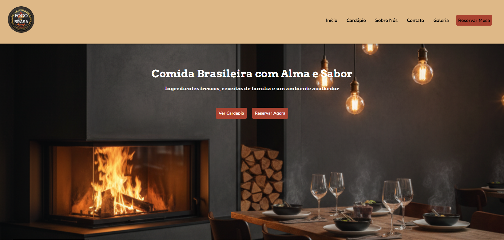
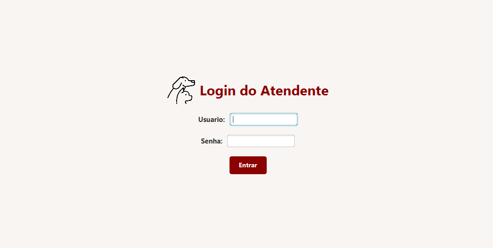
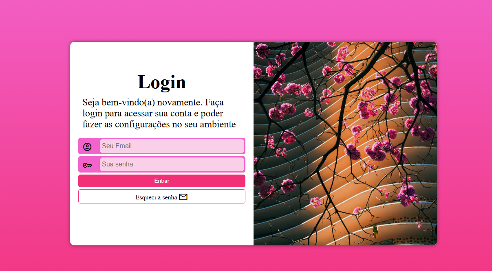
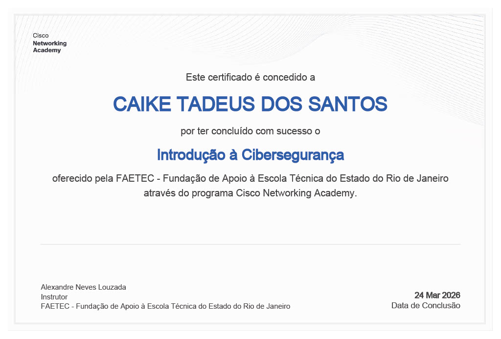
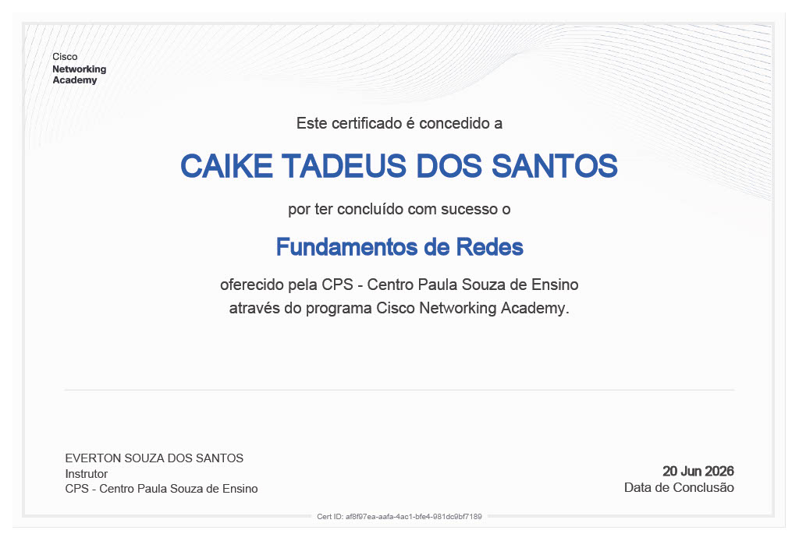
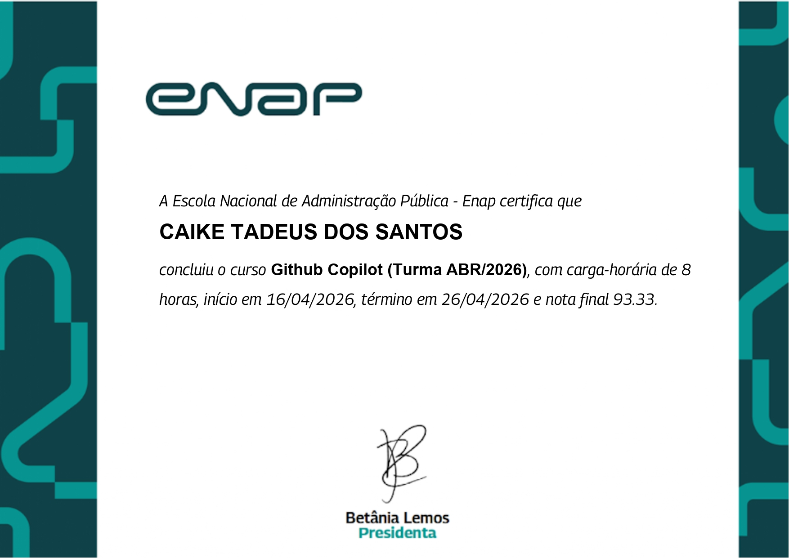
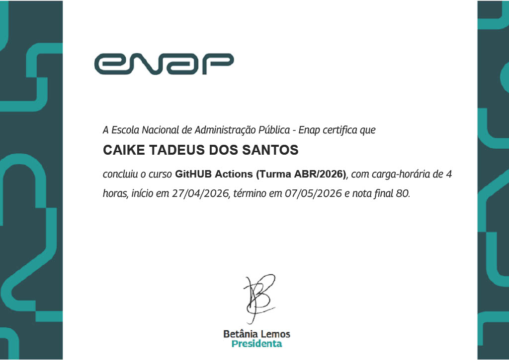

Olá! Meu nome é Caike, sou estudante do 3º período de Análise e Desenvolvimento de Sistemas na FAETERJ-Rio / FAETEC. Sou apaixonado por tecnologia e focado na criação de soluções eficientes, com experiência prática no desenvolvimento de sistemas utilizando Java, PHP, JavaScript, HTML/CSS, C e bancos de dados como MySQL.
Atualmente, busco uma oportunidade de estágio no Rio de Janeiro, onde eu possa colaborar com projetos reais, aplicar meus conhecimentos em desenvolvimento e continuar evoluindo profissionalmente.

Sistema de gestão para restaurantes.

Aplicativo desktop para gestão veterinária.

Tela responsiva para login

Conceitos de proteção digital e desafios de segurança na atualidade.

Habilidades em solução de problemas e melhores práticas de suporte de TI.
_page-0001.jpg)
Fundamentos da linguagem e integração dinâmica com páginas web.
Criação e manipulação de objetos para sistemas flexíveis e reutilizáveis.
.jpg)
Desenvolvimento em ambientes baseados em nuvem para maior flexibilidade.

Uso prático de inteligência artificial para otimização da programação.

Automação e criação de workflows integrados para desenvolvimento.
Estruturação semântica e acessível para a web.
Estilização responsiva, Flexbox, Grid e animações.
Lógica de programação e manipulação do DOM.
Orientação a objetos e desenvolvimento Back-End.
Desenvolvimento server-side e integração dinâmica.
Gerenciamento de bancos de dados relacionais.
Ambiente de execução para aplicações escaláveis.
Lógica estruturada, manipulação de memória e processos.